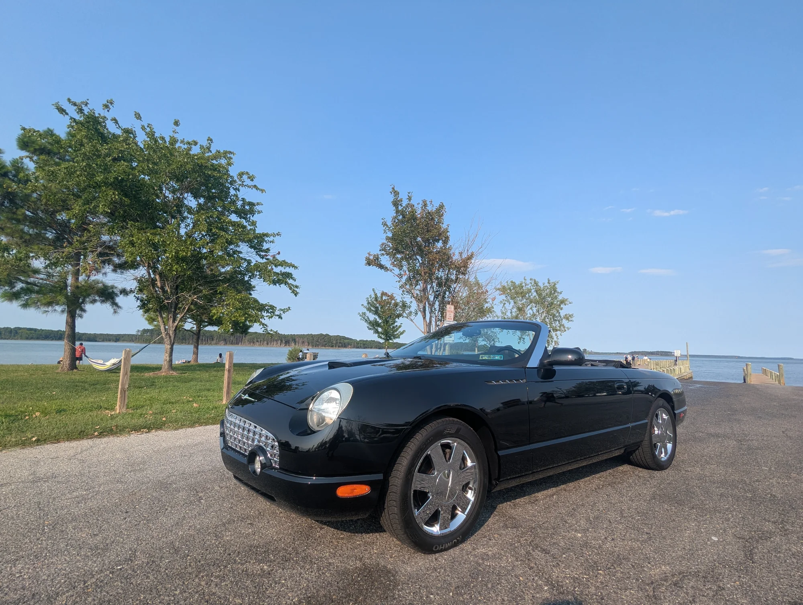

First-year appeal
The 2002 model introduced the eleventh-generation Thunderbird and remains the purest expression of Ford's retro-modern idea.

Private sale / 2002 model year
A V8-powered, rear-drive, two-seat convertible with one of the most recognizable shapes of its era.
The opportunity
The 2002 Thunderbird is easy to understand: a naturally aspirated V8 up front, rear-wheel drive, room for two, and the open sky overhead.
This was the first year of Ford's modern Thunderbird revival. The design borrowed the right details from the original without turning the car into a replica. It still looks special today, and it gives you relaxed V8 touring without the cost or fuss that follows many older classics.
At $18,500, this is a compelling way into a distinctive American convertible. There is no dealer markup or auction countdown, just a straightforward private sale and a thorough set of recent photographs.
Why this Thunderbird
The 2002 model introduced the eleventh-generation Thunderbird and remains the purest expression of Ford's retro-modern idea.
The 3.9-liter DOHC V8 and five-speed automatic make it an easy car for weekend drives, long lunches, and unhurried road trips.
Modern controls, climate control, power seating, and a comfortable cabin make this far more usable than many cars bought purely for style.
Twenty-eight current photographs give a serious buyer a clear look before arranging an inspection and test drive.
Model highlights
The Thunderbird was designed as a personal luxury roadster, not a stripped-down sports car. That distinction matters. It has enough power to feel effortless, a composed independent suspension, and the comfort equipment that makes you want to keep driving.
Recent photography
Click any photograph to open the full frame. Use the arrow keys or on-screen controls to move through the set.
The asking price
Current sales put the strongest first-year Thunderbirds in the mid-to-high teens, with dealer asking prices often higher. This private-sale price leaves room for a straightforward conversation with a serious buyer.
Serious inquiries
Ask for mileage, title and service-history details, included accessories, and a time to inspect the Thunderbird in person.
Request vehicle detailsThis is a privately owned vehicle. It is not owned by, consigned to, or offered for sale by The GT Collective or any affiliated business. Title is held in the owner's individual name, and any sale is strictly between the owner and the buyer. The GT Collective provides web-hosting only and is not a dealer, broker, seller, or party to the transaction. The vehicle is offered as-is; prospective buyers should verify mileage, title status, service history, equipment, and condition during an in-person inspection.